上野から函館への贅沢な旅路の記録
この記事は まちトドン Advent Calendar 2023 へ寄稿する記事です。
カシオペア (上野駅→青森駅)
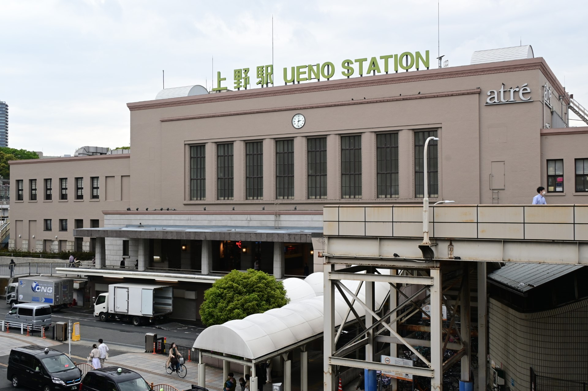
北の玄関口、上野駅です。ここから夜行列車に乗って旅に出るのは昔話であって、私自身が体験できるとは夢みたいです。しかも、幼少の頃から憧れたカシオペアに乗れるなんて......
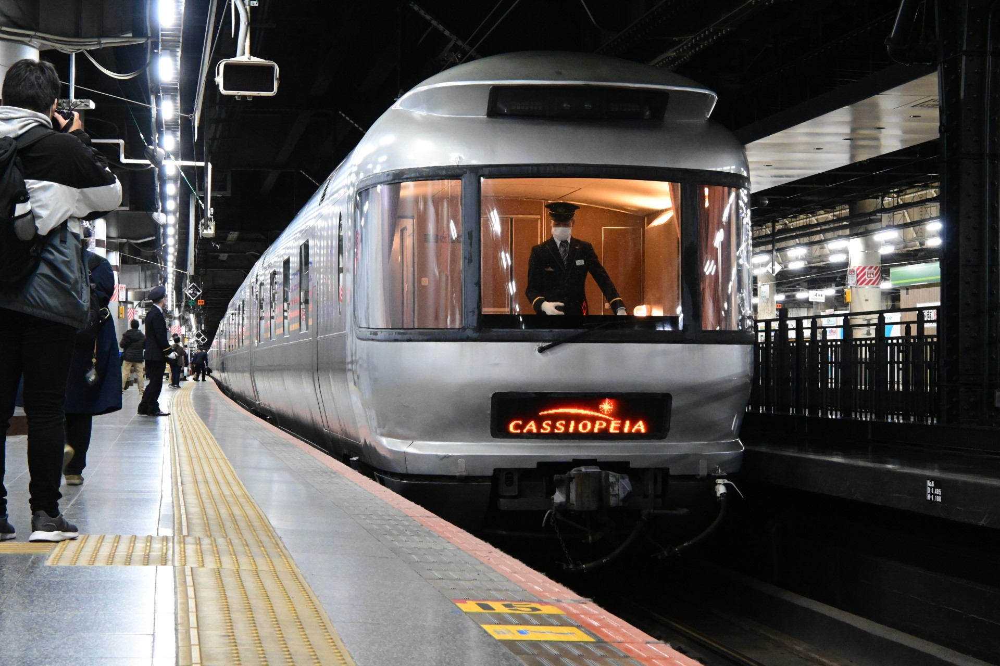
15:20 定刻通り上野駅 13 番線に入線してきます。子供の頃に読んだ鉄道図鑑に載っていた豪華寝台列車が私を乗せるために目の前に現れてきてくれたことだけで、私は感動していました。定期運行時代に何度かヒガハスで撮影したけれど、こうして目の前にいると感情の昂ぶりが抑えられません。
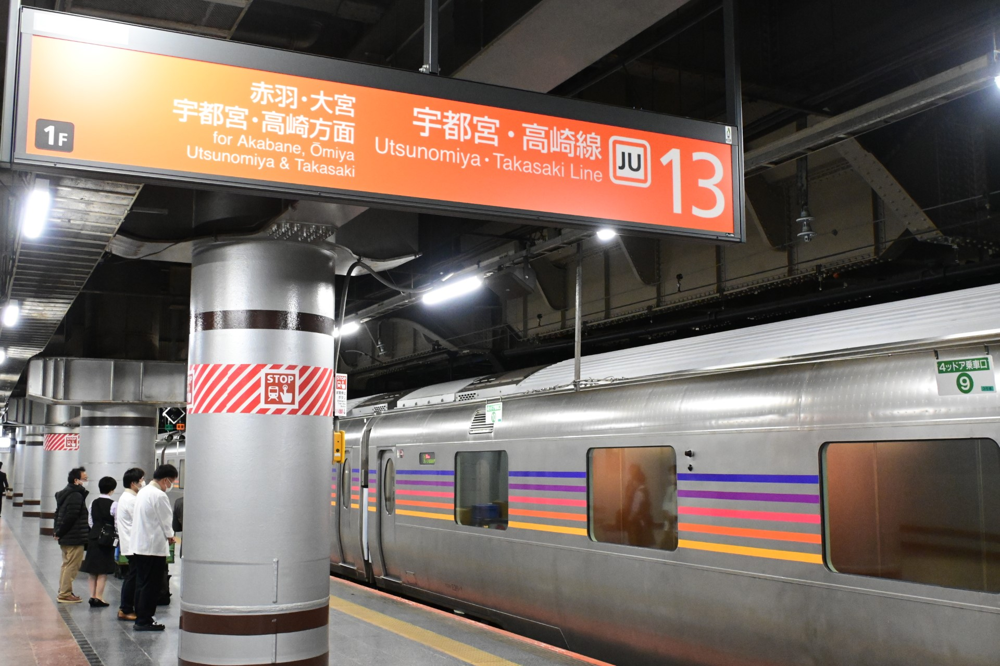
上野駅 13 番線から東北本線の寝台特急に乗るという体験は、これが最初で最後のような気がします。
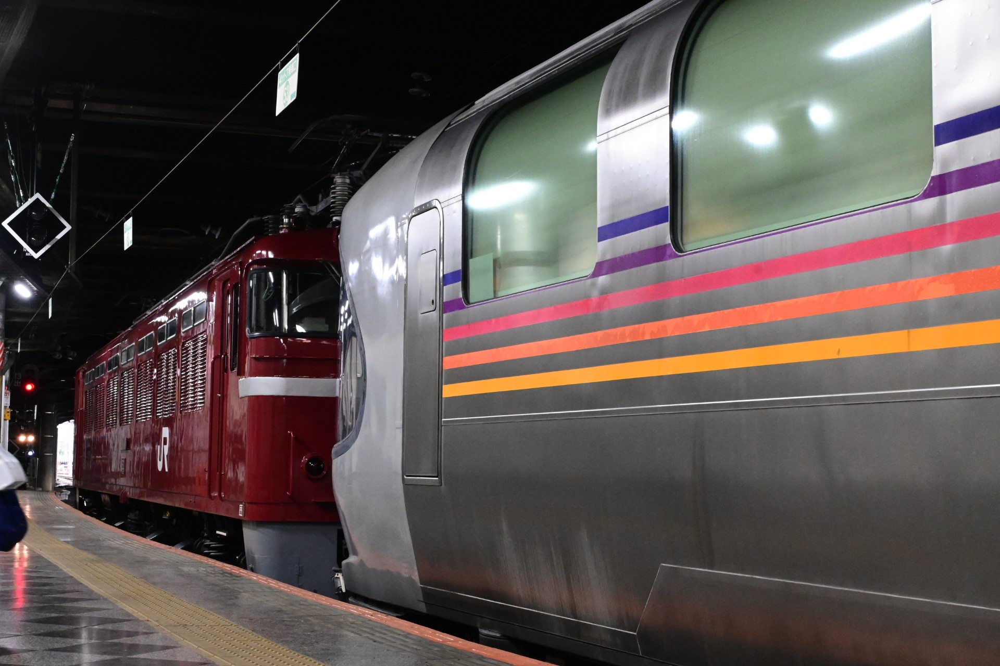
電源車と機関車の近くはエンジンなどの音が響いていて熱気を帯びています。はあ、銀色の車体が艶めかしい。
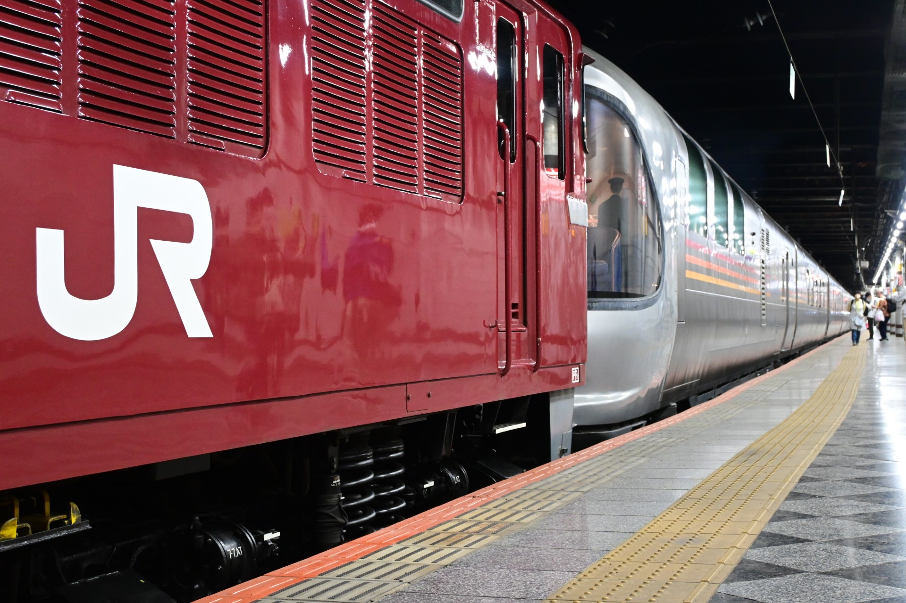
このホームには乗客とスタッフしか入ることができないので、人影はまばらです。こんな色々な角度でカシオペアを撮れるなんて、贅沢すぎます。
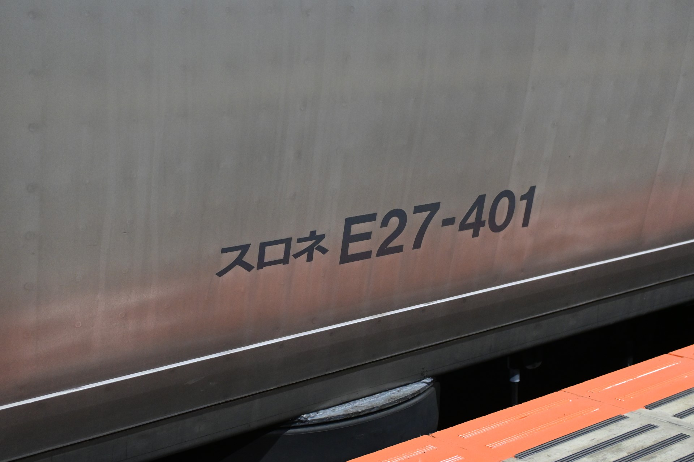
今夜お世話になるのは 9 号車のスロネE27-401です。言うまでもなくトップナンバーです。
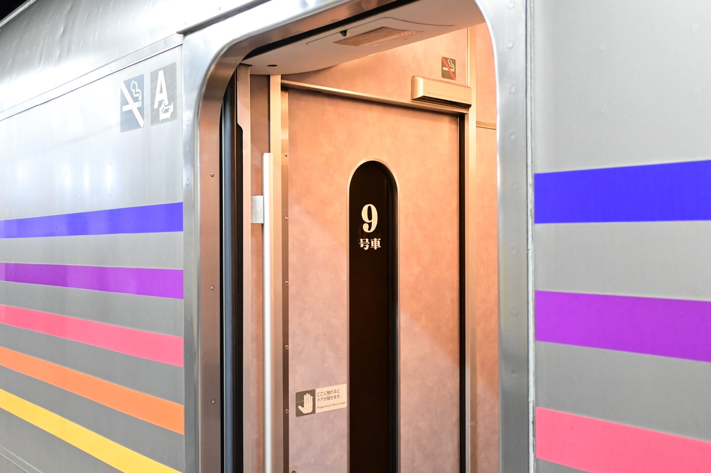
扉をくぐって車内に入るだけなのに、緊張してしまいます。
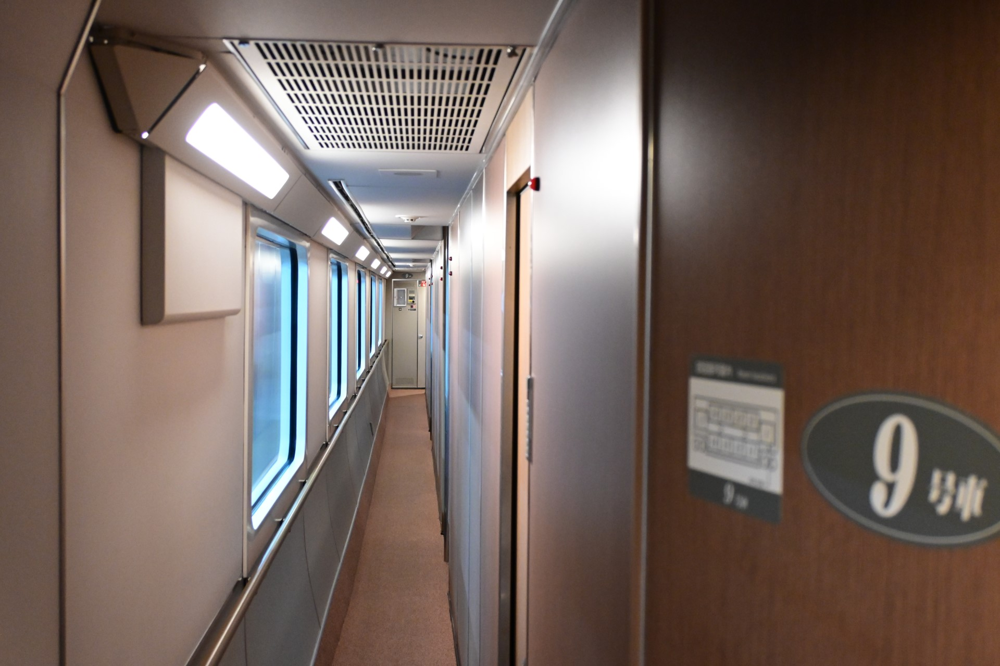
意を決して車内に入ると、少し昔の特急車両の匂いがします。サンライズでも同じ匂いを感じますが、何の匂いなんでしょうか？この匂いがあることによって、この車両は博物館の展示物ではなく、現役の営業車両であることを実感させます。
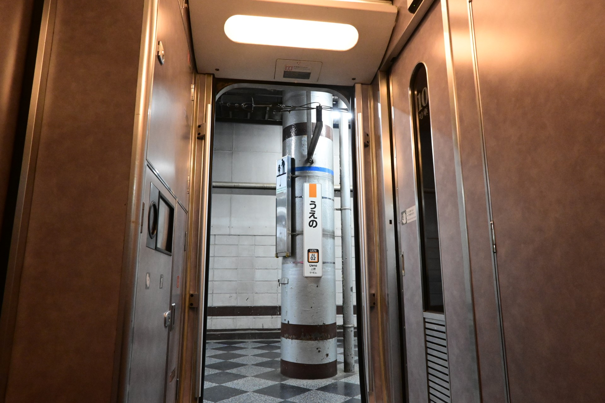
デッキには暖色系の照明が点いており、上野駅の歩廊とは全く違う世界にいるような雰囲気を演出しています。
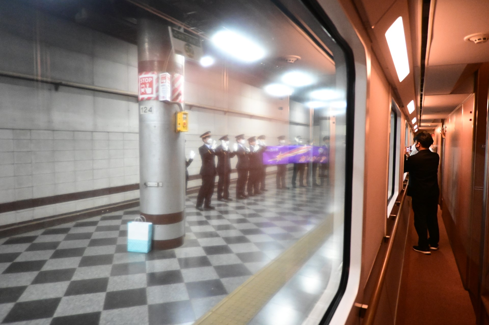
駅員さんや旅行会社のスタッフの方々に見送られながら、上野駅を発ちます。改札口やホーム上でのカシオペア乗客に対する駅員さんの態度が普段よりも明らかに丁寧で、非日常感が溢れます。ありがとうございます。
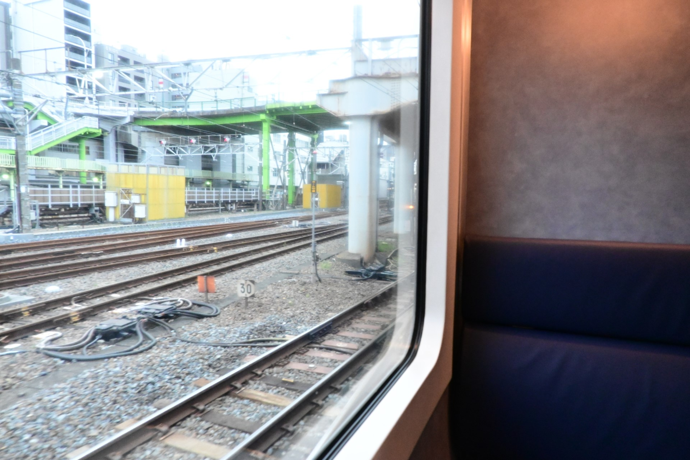
発車後しばらくは自室に戻らずミニラウンジにいました。機関車の吹鳴と転轍機を通る時のジョイント音だけが静かな車内空間に響きます。これが、客車列車の乗り心地なのか......